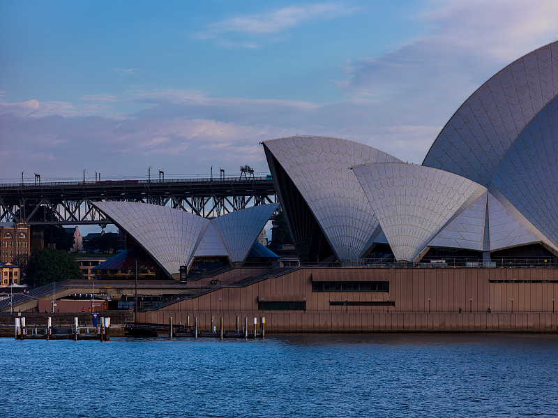
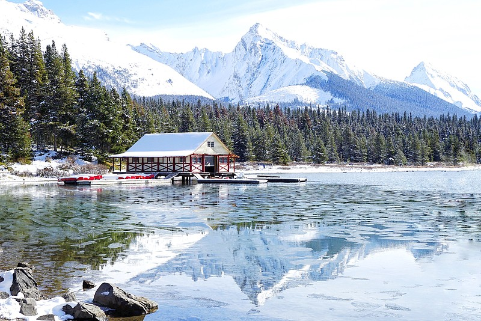
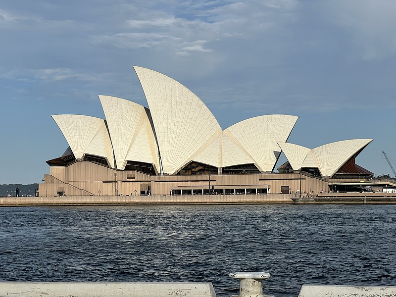

三大方向，总有一个适合你
无论是追求英语国家的长期定居，还是向往拉美阳光与低门槛的长期居留，或是为中国企业高管规划赴美绿卡，我们都能为你规划清晰的路径。
墨西哥永居（绿卡）
无需投资、无需创业，满足经济能力条件即可申请。先临后永：持临时居留满 4 年转永居，绿卡长期身份更自由。
- 无投资、无创业门槛
- 先临后永：持临时居留满 4 年转永居
- 永居后可长期居留，通往北美生活的跳板
美国绿卡（L-1 转 EB-1C）
L-1 签证让中国公司高管与技术人员赴美任职，满足条件后通过 EB-1C 转绿卡，无需劳工证，是中国出海企业人才赴美的主流通道。
- 中国护照可直接申请，不要求墨西哥身份
- L-1A 高管：累计最长 7 年，配偶子女可随行
- EB-1C 转绿卡：免 PERM，获批全家同步拿绿卡

热门澳洲技术移民
EOI 打分制：189 独立技术移民、190 州担保、491 偏远地区；另有雇主担保（482 → 186）与国家创新签证（NIV）。职业覆盖广，华人社区成熟。
- 189/190 获批即永居，无需先工作积累
- 491 偏远地区加 15 分，3 年转 191 永居
- 职业评估 + EOI 入池，全程国内可办

热门加拿大移民
EE 快速通道 CRS 打分、PNP 省提名加 600 分、SUV 创业签证三大路径；FSW 支持海外直申，获批即永居，配偶子女随行。
- EE-FSW 海外直申，获批即永居
- 省提名 CRS +600 分，基本锁定获邀
- SUV 创业签证，创业者专属通道
中国企业出海，人才身份怎么办？
我们与公司直接对接
越来越多中国企业走向海外：设立分公司、外派常驻、跨境经营。员工与高管的长期居留身份，已经成为出海落地绕不开的一环。墨途移民国际面向中国出海企业提供人才身份规划服务，可直接与企业对接合作。
出海企业常遇到同一类问题：外派员工长期驻外，签证往返麻烦、停留期受限；高管与家属随行，身份与子女教育悬而未决；创业者需要在海外长期经营，却缺少稳定的居留身份。这些问题不解决，人才留不住、业务展不开。我们把新西兰绿名单、墨西哥永居、澳洲与加拿大移民及美国绿卡的专业服务，打包成适合企业的合作方案——与公司直接对接，批量办理，统一管理。
无论是为常驻员工规划墨西哥永居（轻门槛起步、先临后永、满 4 年转永居），为高管匹配新西兰绿名单路径（Tier 1 直通居留 / Tier 2 工作转居留），还是为赴美高管规划 L-1 签证转 EB-1C 绿卡，我们都会按企业节奏推进：专人对接、进度透明、签约规范，未获批服务费全额退还。
外派常驻方案
为长期驻外的员工规划长期居留身份，解决签证往返、停留期与合规居留问题。
高管与家属随行
高管及配偶、子女同步规划身份，子女教育与家庭安顿一并安排，出海更安心。
出海创业者身份
为企业主与合伙人提供墨西哥永居等长期身份方案，支持在墨经营、往返两地与北美联动。
企业直接对接
与 HR、行政或管理层直接对接，批量办理、统一结算，签约规范、流程清晰。
跨境身份综合规划
结合出入境便利、长期居住与家庭规划等需求，为员工提供综合身份建议。
专属企业顾问
指派对口顾问响应企业节奏，材料进度透明可查，员工只需配合确认。
与我们对接，四步启动
对接洽谈
企业与我们对接触达需求，明确涉及国家、人数与时间窗口。
人才评估
逐人核对条件：新西兰绿名单职业、薪酬或墨西哥收入/存款方案，给出可行性结论。
批量办理
统一签约、逐人建档，材料准备、递交与跟进全流程专业执行。
持续服务
获批后协助入境安顿，续签、转永居与后续人员补充持续跟进。
企业合作：出海企业人才身份规划，欢迎与我们对接收洽。可为企业提供整体方案介绍与员工专场评估，批量办理享专属企业价；未获批服务费全额退还，承诺写入协议。
把复杂的移民流程，
变成一份清晰的路线图
我们不贩卖焦虑，只提供专业、透明的服务：每一步做什么、为什么、需要多久，都在签约前讲清楚。
专业持牌团队
深耕新西兰、墨西哥移民事务，持续跟踪两国最新政策与审理要点，确保方案始终贴合现行规定。
一对一定制方案
按家庭背景、资金状况与目标时间设计专属路径，不套模板，不推销不合适的项目。
全流程材料把关
翻译、公证、资金与收入证明逐项审核，提前发现并解决补件隐患，降低拒签风险。
透明报价
服务费用与办理范围在签约前书面确认，无隐藏收费，款项进度清晰可查。
获批后安家服务
协助入境安排、银行开户、租房选址等落地事项，让新生活起步更顺利。
长期后续支持
续签、转永居、家庭团聚等后续事项持续跟进，做你的长期移民管家。
六步走完全程，每一步都清楚
从第一次沟通到落地安家，我们会在每个节点主动同步进度，你随时知道申请进行到哪一步。
免费评估
沟通个人背景与移民目标，初步判断可行性与最合适的项目方向。
方案设计
匹配签证路径、时间表与费用明细，签约前书面确认全部内容。
材料准备
指导整理资金、收入、学历、无犯罪记录等证明文件，逐项把关。
递交与跟进
递交申请并实时跟进审理进度，及时响应补件与审核要求。
获批入境
获批后协助办理签证激活、入境安排与当地身份手续。
落地安家
协助银行开户、租房、子女入学咨询等，帮助全家平稳落地。
你可能想先了解这些
你们主要办理哪些国家？
墨西哥永居需要投资或买房吗？
新西兰移民现在有哪些主要路径？
办理周期大概需要多久？
可以带家人一起申请吗？
材料不齐全怎么办？
可以与企业对接、批量服务员工身份吗？
外派员工办理身份和普通申请有什么不同？
「直接拿护照项目」是什么？
迈出第一步，从一次免费评估开始
留下你的联系方式与意向目的地，顾问将在 1 个工作日内与你联系，初步评估可行性并解答疑问。咨询全程免费，不收取任何费用。
墨西哥居留卡核心问题速览
以下 6 个问题覆盖了最常被搜索的关键信息，答案均已按最新公开口径整理，详细内容见下文分节。
墨西哥居留卡是什么？
答：墨西哥官方签发的长期居留身份（Residencia Temporal），介于旅游签证与永久居留之间，无需投资创业，凭经济能力证明即可申请。
申请需要什么条件？
答：满足其一即可——近 6 个月每月税后收入约 4,000–4,500 美元，或近 12 个月账户月均余额约 68,000–75,000 美元，另需有效护照、无犯罪记录并前往驻华使领馆面签。
有效期多久？能续签吗？
答：通常为 1 至 4 年，可按规定续签；为维持身份，通常每 180 天入境一次即可。持临时居留满 4 年可申请永久居留，转永居时通常要求持卡期间每年在墨居住不少于约 180 天。
办理要花多少钱？
答：领馆签证费、居留卡签发费按官方最新标准缴纳，翻译公证等材料费实报实销，服务费签约前书面确认，无隐藏费用。
多久能办好？
答：通常以周至月计，取决于领馆排期与个案材料；签证获批入境后，须在 30 天内前往移民局换领居留卡。
不会西语可以申请吗？
答：可以。申请没有硬性语言门槛，不要求语言成绩；材料审核以经济能力证明为核心，全程可配合中文服务办理。
为什么现在越来越多人办理墨西哥永居（绿卡）？
近年来，墨西哥居留卡的热度持续升温，越来越多中国家庭、自由职业者与高净值人士把「先拿临时居留、满 4 年转永居」当作长期身份的「轻量级」路径。原因并不复杂。
简单回答：因为墨西哥永居（绿卡）是目前门槛最低、确定性最高的长期身份选项之一——无需投资、无需创业、无需语言成绩，凭稳定的月收入或银行存款证明即可起步；路径也很实在——先拿临时居留、每 180 天入境一次即可维持身份、满 4 年转永居后不再受年度停留限制，等于用较低的成本，为自己和家人保留了一个通往北美生活的「长期选项」。
对许多人来说，墨西哥还是理想的第二居所：生活成本比北美主流城市友好得多，气候从海滨到高原选择丰富，既能作为旅居度假的常驻地，也为资产安排提供了新的思路。当越来越多人开始为家庭规划「第二身份」，墨西哥永居就成了一个进可攻、退可守的选择。
门槛低到什么程度？
满足收入或存款两种经济能力证明之一即可申请，不需要在当地开办企业、购买房产或进行任何投资。
适合什么人？
有稳定收入或养老金的退休人士、远程办公与自由职业者、计划长期旅居的家庭，以及希望为身份规划预留选项的人。
为什么是墨西哥，而不是其他国家？
相比多数欧美长居项目，墨西哥资金门槛与申请复杂度明显更低；相比拉美其他国家，它经济规模大、城市国际化程度高、离美国近，生活成本又远低于北美主流城市，综合性价比突出。
什么是墨西哥居留卡？
墨西哥永居（绿卡，Residencia Permanente）是墨西哥移民局签发的长期永久居留身份；对多数申请人来说，标准的获取路径是先申请临时居留（Residencia Temporal）（面向居住超过 180 天、通常不超过 4 年的外国人），持临时居留满 4 年后申请转永久居留。
它介于旅游签证与永久居留之间：比旅游签证停留更久、生活更方便，又不要求像永久居留那样长期绑定。获批后可按需在墨长期生活，符合条件还可申请工作许可。
- 无需投资、无需创业，经济能力证明即可申请
- 主申请人获批后，配偶与未成年子女可随同申请
| 对比维度 | 旅游签证 | 临时居留 | 永久居留 |
|---|---|---|---|
| 单次停留 | 通常不超过 180 天 | 长期居住，最长 4 年 | 长期居住 |
| 申请门槛 | 行程与资金证明 | 经济能力证明（收入或存款） | 通常需先持有临时居留 |
| 是否需要投资 | 否 | 否 | 否 |
| 可否工作 | 否 | 符合条件可申请工作许可 | 可以 |
| 身份维持 | 按时离境 | 每 180 天入境一次 | 遵守居留规定即可 |
| 转永居路径 | — | 满 4 年可申请 | — |
表格为常见规则概览，具体以墨西哥移民局（INM）及驻华使领馆最新规定为准。
申请墨西哥居留卡需要什么条件？
申请以「经济能力证明」为核心依据，以下两种方式任选其一即可。主申请人获批后，配偶与未成年子女可随同申请。
月收入证明
- 近 6 个月每月税后收入不低于约 4,000–4,500 美元
- 在职收入、养老金均可作为证明来源
- 适合有稳定工资或退休金的申请者
银行存款证明
- 近 12 个月账户月均余额不低于约 68,000–75,000 美元
- 存款、理财、投资账户均可纳入计算
- 适合储蓄充足、收入证明不便的申请者
所有申请者均需满足
- 有效护照，有效期覆盖在墨居留期间
- 无犯罪记录，健康状况符合要求
- 填写申请表，预约并前往墨西哥驻华使领馆面签
- 签证获批入境后，须在 30 天内前往移民局换领居留卡
以上金额为按 2025–2026 年墨西哥驻外使领馆一般标准的约数，实际以申请时领馆最新公布的官方标准为准，不同领馆金额可能略有差异。我们会按你的情况给出精确测算与材料清单。
墨西哥居留卡有效期多久？可以续签吗？
有效期是多久？
居留卡有效期通常为 1 至 4 年（以获批时移民局核发为准），适合希望长期在墨居住 6 个月以上的申请者。
可以续签吗？
可以。居留卡到期前可按规定办理续期；满足条件时，持临时居留满 4 年可申请永久居留。
需要一直待在墨西哥吗？
不需要。通常每 180 天内入境墨西哥一次即可维持身份，适合在国内与墨西哥之间灵活安排生活的人。
能带家人一起吗？
可以。主申请人获批后，配偶与未成年子女可随同申请临时居留，一同享受居留权益。
持有墨西哥居留卡可以工作吗？需要会西语吗？
持卡可以工作吗？
居留卡本身以长期居住为目的签发；如希望在墨工作，可另行向移民局申请工作许可，符合条件即可获批。
需要会西班牙语吗？
申请阶段不要求提供语言成绩，没有硬性语言门槛；面签等环节按领馆要求安排，材料审核以经济能力证明为核心。
办理墨西哥居留卡要花多少钱？
费用透明是我们的基本承诺：官方收费一律按政府机构最新标准实缴，服务费在签约前书面确认，中途不追加隐藏费用。
| 费用项目 | 说明 | 金额 |
|---|---|---|
| 领馆签证申请费 | 递交临时居留签证申请时，由墨西哥驻华使领馆收取 | 以领馆最新公布为准 |
| 居留卡签发费 | 入境墨西哥后前往移民局（INM）换领居留卡时缴纳 | 以移民局最新公布为准 |
| 翻译 · 公证等材料费 | 视个人材料情况按实际发生收取 | 实报实销 |
| 墨途移民服务费 | 按方案与家庭情况报价，签约前书面确认 | 一对一透明报价 |
如需加急办理或涉及特殊情况，相关费用另计并提前告知。最终金额以申请时官方标准与签约方案为准。
申请墨西哥居留卡多久能办好？
办理周期通常以周至月计，主要取决于领馆排期与个案材料情况：材料齐全、排期顺利的个案进度较快，旺季或材料需补充时会长一些。
材料准备：资金证明、护照、照片等，顾问一对一指导，通常 1–2 周内可备齐；领馆审核与面签：以预约排期与领馆审理速度为准；入境换卡：签证获批后入境墨西哥，30 天内前往移民局换领居留卡即可完成全部手续。
签约后，我们会结合你的情况给出预计时间表，并在每个节点主动同步进度，你随时知道申请进行到哪一步。
墨西哥居留「大包服务」· 一价全包
不成功，全额退款
针对墨西哥永居（绿卡）项目，我们提供真正全包的一站式服务：资料、流水、机票、全程护航一价到底，并承诺未获批全额退还服务费。
资料全包
申请所需资料全部代准备、代翻译、代递交，你只需配合确认签字。
流水规划
协助规划银行流水与资金证明，对照领馆审核标准提前备好。
全网低价
透明报价、全网比价，签约价格一价到底，不花冤枉钱。
折扣机票
协助预订往返或单程折扣机票，出行成本更低、行程更省心。
全程护航
从签约到获批，专属顾问跟进每个节点，主动同步进度、及时响应补件。
全额退款
全程保驾护航直至拿到绿卡；如最终未获批，服务费 100% 全额退还。
服务承诺：我们承诺全程保驾护航，保证服务直到你拿到绿卡；如申请最终未获批，已收取的服务费 100% 全额退还（政府规费与第三方实付费用除外）。承诺写入签约服务协议，白纸黑字、可查可依。
持有墨西哥居留卡有哪些好处？
无需投资创业
不需要在当地开办企业、购买房产或进行任何形式的投资，门槛清晰直接。
条件明确
收入或存款满足其一即可，材料简单、可提前评估，避免盲目申请。
生活成本友好
从海滨城市到文化名城，居住与生活成本普遍低于北美主流城市，生活节奏松弛。
通往永居的跳板
持临时居留满 4 年后可申请永久居留，为长期在墨生活铺平道路。
家庭可随行
主申请人获批后，配偶与未成年子女可随同申请，一同享受居留权益。
身份维持灵活
无需长期在墨居住，每 180 天入境一次即可维持身份，可兼顾国内事业与海外生活。
墨西哥公民专属美国签证：TN、BCC、E-2
拿到墨西哥身份，等于解锁三条「别的国家没有」的美国签证通道。以下三条均以墨西哥公民身份（持墨西哥护照）为前提，是墨西哥移民的独有附加价值。
为什么强调「专属」？因为它们的法律依据是美墨之间的双边协定：TN 签证只对墨西哥、加拿大公民开放；BCC 边境通行卡全球仅墨西哥公民可申请；E-2 投资签证依托美墨贸易条约，墨西哥是条约国。三者都与中国护照无关，必须先取得墨西哥身份。以下逐一讲清用途、条件与限制。
需要先说明：以上通道面向墨西哥公民（持墨西哥护照）。持墨西哥临时居留卡不等于护照，规划时请一并考虑「居留 → 永居 → 入籍」的完整路径，入籍条件以墨西哥官方最新规定为准。
TN 签证（USMCA 专业人士签）
仅限墨西哥、加拿大公民，中国护照不能申请。定位是专业人士临时工作签，常被称为「H-1B 平替」。
- 免抽签：H-1B 每年抽签，TN 无需抽签
- 限 USMCA 职业清单内 60+ 专业，本科起步
- 墨西哥人须先在境外美领馆申请 TN 贴纸再入境
- 每次最长 3 年，可无限次延期
- 配偶子女可持 TD 随行（TD 不能工作）
- 允许移民倾向：可边持 TN 边递交 EB-2 NIW / EB-1C 绿卡
短板：不能自雇，须有美国雇主 offer，且岗位必须在 USMCA 职业清单内。
BCC 边境通行卡（DSP-150）
Border Crossing Card，俗称边境卡，全球仅墨西哥公民可申请，其他任何国家护照都不行。
- 功能等同 B1/B2 旅游商务签，专用于美墨边境短途入境
- 限边境 25 英里范围内，单次最多停留 30 天
- 有效期 10 年，多次往返，陆路口岸过关方便
- 坐飞机深入美国内陆仍需 B1/B2 签证，BCC 不够
这是墨西哥独有的通行便利，加拿大、牙买加等国公民都没有。
E-2 投资签证（条约国）
E-2 是双边贸易投资条约签证，墨西哥是条约国，墨西哥公民可以申请（如牙买加等非条约国则不能）。
- 在美国投入大额实质性资金创办或收购企业
- 须亲自参与企业管理，不能只是被动投资
- 可续签延期，配偶可申请工作许可
- 属非移民签证，不直接获得绿卡
适合有意在美经营业务、同时希望为家人提供在美居留条件的申请人。
| 签证 | 适合谁 | 核心要求 | 注意点 |
|---|---|---|---|
| TN 签证 | 清单内专业人士（工程师、会计、建筑师、计算机、护士、大学讲师等） | 本科起步 + 美国雇主 offer + 岗位在 USMCA 职业清单 | 免抽签、3 年一续；可同时办 EB 类绿卡 |
| BCC 边境卡 | 常住美墨边境、需频繁短途入境的墨西哥公民 | 墨西哥公民身份，通过背景审查 | 仅限边境 25 英里内、30 天内；去内陆需 B1/B2 |
| E-2 投资签 | 有意在美创办/收购并亲自经营企业的投资者 | 大额实质性资金投入 + 亲自管理 + 墨西哥条约国公民 | 可续签；非移民，不直接拿绿卡 |
以上签证通道均以墨西哥公民身份为前提，签证审批以美国领事馆与移民局个案审核为准。办理墨西哥居留、永居与入籍的完整路径，可让顾问为你整体规划。
墨西哥居留卡申请流程是怎样的？
从资质评估到入境换卡，六步走完全程。材料清单、面签预约与入境手续都会提前安排妥当。
资质评估
核对收入或存款条件，确认你最适合的方案与所需金额。
方案与材料
制定材料清单，指导准备资金证明、护照、照片等文件。
预约面签
协助预约墨西哥驻华使领馆面签时间，做好面签准备。
领馆面签
递交材料、完成面试，获批后领取签证。
获批入境
凭签证入境墨西哥，30 天内协助完成居留卡换领手续。
身份维持与后续
提醒入境时间节点，协助续签、转永居与家庭团聚规划。
关于墨西哥居留卡，这些高频问题帮你一次讲清
申请永久居留前，需要在墨西哥境内待多久？
临时居留和旅游签证有什么区别？
必须要有工作或收入才能申请吗？
获批后能在墨西哥工作吗？
拿到身份后需要一直待在墨西哥吗？
满 4 年后会自动转为永久居留吗？
家人可以一起申请吗？审理大概要多久？
申请需要会西班牙语吗？
可以远程办公或长期旅居两用吗？
会不会被拒签？拒签了怎么办？
父母或成年子女可以随同申请吗？
持居留卡满多久可以申请墨西哥入籍？
「大包服务」包含哪些内容？
拿不到绿卡真的全额退款吗？
墨西哥公民可以申请哪些美国专属签证？
L-1 签证可以转美国绿卡吗？
公司可以为企业员工批量办理墨西哥居留吗？
不确定自己是否符合条件？先做一次免费评估
留下联系方式，顾问将结合你的收入或存款情况，评估可行性并给出精确的资金测算与材料清单。
新西兰绿名单核心问题速览
以下 6 个问题覆盖最常被搜索的关键信息，答案按新西兰移民局现行口径整理，详细内容见下文分节。
绿名单是什么？
答：新西兰移民局发布的紧缺职业清单（Green List），分 Tier 1 与 Tier 2 两级：Tier 1 职业可走「直通居留」，Tier 2 职业可走「工作转居留」，是当前新西兰技术移民里最受关注的路径之一。
哪些职业在绿名单上？
答：集中在医护、工程、ICT 信息技术、建筑、教育等紧缺领域，如注册护士、全科医生、土木/电气/机械工程师、软件工程师、ICT 项目经理、建筑项目经理、中学教师、部分技工等。具体以移民局最新公布的绿名单为准。
申请需要什么条件？
答：核心是四项：55 岁及以下；获得认证雇主（Accredited Employer）的工作或工作邀请；职业在绿名单对应层级；薪酬达到该职业指定费率或中位工资。另需满足英语、健康与品行要求。
Tier 1 和 Tier 2 有什么区别？
答：Tier 1 职业可直接申请居留（Straight to Residence），无需先积累工作时长；Tier 2 职业需先持工作签证在绿名单职业全职工作满 24 个月，再申请居留（Work to Residence）。
办理要花多少钱、多久？
答：直通居留签证费从 NZD $6,450 起，移民局 80% 的申请在 3 个月内审理完成；另有翻译公证、体检、服务费等，签约前书面确认。
不会英语可以申请吗？
答：需要提供英语能力证明，通常为雅思总分 6.5 或同等水平；医护等注册类职业另有注册语言要求。可提前评估当前水平并规划备考时间。
为什么越来越多人走新西兰绿名单？
在主流英语国家的技术移民里，绿名单是「确定性」很高的路径：职业在榜、条件清晰，满足要求即可递申居留。
绿名单的核心吸引力在于路径明确、审理快：Tier 1 职业无需先工作积累，拿到认证雇主的工作邀请即可直接申请居留，移民局 80% 的申请在 3 个月内审结；Tier 2 职业则以两年全职工作换居留，每一步都有清晰的时间表。相比纯评分制的技术移民，绿名单更像一份「按图索骥」的清单——你只需要逐项确认自己是否满足。
对工程师、护士、教师、IT 从业者等高技能人群来说，新西兰还叠加了生活层面的吸引力：纯净的自然环境、公认的公立教育与医疗福利、相对宽松的移民社会氛围。获居留后即可长期在新西兰生活、工作与学习，子女随行享受本地教育，家庭一步到位。
绿名单和普通技术移民比有什么优势？
绿名单职业有专属居留通道，不受普通 SMC 6 分制那样复杂的评分约束；条件满足即可申请，透明度与确定性更高。
适合什么人？
职业在绿名单上的工程师、医护、IT、建筑、教育从业者，以及愿意先在 Tier 2 职业工作两年再转居留的申请人。
什么是新西兰绿名单（Green List）？
绿名单（Green List）是新西兰移民局发布的紧缺职业清单，分为两个技能层级：Tier 1（最高层级，对应「直通居留」）与 Tier 2（对应「工作转居留」）。只要你的职业在榜、满足对应条件，即可通过专属通道申请新西兰居留。
与普通技术移民（SMC）的评分制不同，绿名单按职业逐个列出资格要求（学历、注册、薪酬），符合条件的申请人路径更直接，也更容易提前判断自己是否够格。
- Tier 1 直通居留（Straight to Residence）
- Tier 2 工作转居留（Work to Residence）
- 主申请人获批后，配偶与未成年子女可随同申请
| 对比维度 | Tier 1 直通居留 | Tier 2 工作转居留 |
|---|---|---|
| 适用职业层级 | 绿名单 Tier 1（最高技能层） | 绿名单 Tier 2 |
| 路径方式 | 拿到认证雇主工作邀请后直接申请居留 | 先持工作签证全职工作 24 个月，再申请居留 |
| 雇主要求 | 认证雇主（Accredited Employer） | 认证雇主（Accredited Employer） |
| 薪酬要求 | 达到该职业指定费率，或中位工资（无指定时） | 达到该职业指定费率，或中位工资（无指定时） |
| 年龄限制 | 55 岁及以下 | 55 岁及以下 |
| 审理速度参考 | 80% 在 3 个月内 | 视个案情况 |
以上为常见规则概览，职业资格与薪酬要求以新西兰移民局最新公布的绿名单（Appendix 13）为准。
绿名单上都有哪些职业？
绿名单职业集中在新西兰长期紧缺的行业，以下为常见类别举例。同一职业可能因学历、注册与薪酬要求不同而分属 Tier 1 或 Tier 2，请以移民局最新清单逐项核对。
常见直通居留职业
- 医护：注册护士、全科医生、专科医生等
- 工程：土木、电气、机械、结构等工程师
- ICT：软件工程师、ICT 项目经理、网络工程师等
- 建筑：建筑项目经理、工料测量师等
- 教育：中学教师等注册教师岗位
- 专业服务：审计师等（需达指定薪酬）
常见工作转居留职业
- 建筑技工：建筑助理、工地主管等
- 工程技工：电工、水管工、焊工、木工等
- 部分医护辅助岗位与特定行业技工
- 工作满 24 个月后可申请居留（WTR）
绿名单（Appendix 13）会随新西兰就业市场变化调整，职业资格、注册与薪酬要求逐项列明。签约前顾问会按你的学历、职业与薪酬与最新清单逐条核对，确认走 Tier 1 还是 Tier 2、以及需要补齐的资质。
申请新西兰绿名单居留需要什么条件？
按你走的路径区分：Tier 1 直接申请居留，Tier 2 先工作后申请。两条路径的共同门槛包括年龄、认证雇主、英语、健康与品行。
Tier 1 · 直通居留（STR）
- 职业在新西兰绿名单 Tier 1 列表，满足对应学历或注册要求
- 持有认证雇主的工作或工作邀请，工作为长期或至少 12 个月固定期
- 薪酬达到该职业指定费率，或中位工资（无指定费率时）
- 满足条件后直接递交居留申请，无需先积累工作时长
Tier 2 · 工作转居留（WTR）
- 职业在新西兰绿名单 Tier 2 列表
- 持工作签证在绿名单职业全职（每周至少 30 小时）工作满 24 个月
- 工作期间薪酬持续达到该职业指定费率或中位工资
- 递交申请前 30 个月内累计满 24 个月工作即可申请居留
两条路径均需满足
- 年龄 55 岁及以下（主申请人）
- 英语能力：通常需雅思总分 6.5 或同等水平，注册类职业以注册要求为准
- 健康与品行：通过体检，无犯罪记录
- 主申请人获批后，配偶与未成年子女可随同申请居留
中位工资参考：2026 年 3 月 9 日起新西兰移民中位工资为 NZD $35.00/小时（每年随最新数据调整）。具体职业的学历、注册、薪酬要求以新西兰移民局绿名单（Appendix 13）与当时生效的中位工资为准，签约前我们会逐项核实。
办理新西兰绿名单居留要花多少钱？
费用透明是我们的基本承诺：政府收费一律按移民局最新标准实缴，服务费在签约前书面确认，中途不追加隐藏费用。
| 费用项目 | 说明 | 金额 |
|---|---|---|
| 直通居留签证费 | Straight to Residence Visa 移民局申请费 | 从 NZD $6,450 起 |
| 工作转居留签证费 | Work to Residence Visa 移民局申请费（如走 Tier 2） | 以移民局最新公布为准 |
| 工作签证相关费用 | Tier 2 路径前期持工签在墨工作阶段的相关签证费用 | 按实际发生 |
| 翻译 · 公证 · 体检等 | 学历认证、职业注册、体检与无犯罪证明等第三方费用 | 实报实销 |
| 墨途移民服务费 | 按方案与家庭情况报价，签约前书面确认 | 一对一透明报价 |
如需加急办理或涉及职业注册、学历认证等特殊情况，相关费用另计并提前告知。最终金额以申请时移民局官方标准与签约方案为准。
新西兰绿名单居留多久能办好？
直通居留（Tier 1）的审理速度是它的一大优势；Tier 2 路径则需先完成两年工作积累。
直通居留（Tier 1）要多久？
移民局官网显示80% 的申请在 3 个月内审理完成。整体周期还包含前期职业评估、材料准备与认证雇主的匹配时间，通常从签约到获批以数月至半年计。
工作转居留（Tier 2）要多久？
除居留审理时间外，还需先在绿名单职业全职工作满 24 个月再递申，总周期相对更长；适合愿意先登陆工作、边工作边积累的家庭。
走绿名单路径有哪些好处？
路径明确
职业在榜、条件清晰，逐项核对即可判断可行性，没有评分制的模糊地带。
直通可期
Tier 1 拿到认证雇主工作邀请即可直接申请居留，无需先积累工作时长。
审理较快
移民局 80% 的直通居留申请在 3 个月内审结，进度可预期。
家庭随行
主申请人获批后，配偶与未成年子女可随同申请居留，子女可入读本地学校。
一劳永逸
居留获批后可长期在新西兰生活、工作、学习，无需反复续签，符合条件还可规划后续公民身份。
宜居环境
纯净的自然环境、安全的社会氛围与完善的公立教育、医疗福利，适合家庭长期定居。
新西兰绿名单申请流程是怎样的？
从职业评估到获批落地，六步走完全程。Tier 1 与 Tier 2 的差异主要在「工作积累」这一步。
职业评估
核对学历、职业代码与最新绿名单，判断走 Tier 1 还是 Tier 2，明确需补齐的资质。
匹配认证雇主
协助对接认证雇主与工作邀请，确认职位、薪酬与合同期限符合要求。
材料与语言
准备学历认证、职业注册、英语成绩、体检与无犯罪记录等材料，逐项把关。
递交申请
Tier 1 直接递交居留申请；Tier 2 先申请工作签证登陆，工作满 24 个月后递交居留申请。
审理与获批
跟进审理进度，及时响应补件要求；直通居留 80% 的申请在 3 个月内审结。
登陆安家
获批后协助入境安排、银行开户、租房与子女入学咨询，全家平稳落地。
关于新西兰绿名单，这些高频问题帮你一次讲清
绿名单和普通技术移民（SMC）有什么区别？
我的职业不在绿名单上，还能移民新西兰吗？
认证雇主是什么？一定要找认证雇主吗？
需要提前找到工作才能申请吗？
英语要求高吗？
Tier 2 工作满 24 个月后一定能转居留吗？
可以带家人一起申请吗？
会不会被拒签？拒签了怎么办？
公司可以对接为员工批量办理绿名单移民吗？
不确定职业是否在绿名单？先做一次免费评估
留下联系方式与职业情况，顾问将核对最新绿名单，评估你的职业是否在榜、适合走 Tier 1 还是 Tier 2，并给出材料清单与时间表。
直接拿护照核心问题速览
以下 6 个问题覆盖最常被搜索的关键信息，答案按各国项目现行口径整理，详细内容见下文分节。
什么是直接拿护照项目？
答：指投资入籍（Citizenship by Investment，CBI）：依国家公民投资法案，通过捐赠或投资获得该国公民身份并领取护照，是各国政府依法设立的合法项目，全程有官方流程与背景审查。
这个项目合法吗？
答：合法。所有推荐项目均以该国现行公民投资法案为依据，官方授权机构审核、政府签发护照；申请人需通过资金来源与背景审查，流程公开可查。
哪些国家可以办？
答：主流项目分三档：加勒比（多米尼克、圣基茨、格林纳达、安提瓜、圣卢西亚）、欧洲（马耳他欧盟护照）、亚欧与太平洋（土耳其、瓦努阿图等），各有定位与门槛。
要花多少钱？
答：加勒比捐赠项目最低约 20 万美元起（2024 年后统一新规）；土耳其购房 40 万美元（3 年后可出售）；马耳他约 60 万欧元起；瓦努阿图约 13.5 万美元全包，各有不同。
多久能拿到护照？
答：瓦努阿图最快约 1–3 个月；加勒比主流项目约 3–6 个月；土耳其约 6–9 个月；马耳他约 12–36 个月。具体视个案审查进度。
需要亲自过去居住吗？
答：多数加勒比项目无居住要求（安提瓜需获批后 5 年内登陆 5 天）；土耳其与瓦努阿图亦无需长期居住。部分国家正推进最低登陆要求，以官方最新公布为准。
为什么越来越多人规划「第二护照」？
在全球化与不确定性并存的今天，第二护照早已不是少数人的专属，而是一份面向未来的身份储备。
越来越多中国家庭与企业主开始配置第二身份，核心动机很朴素：多一本护照，多一种选择。它带来的是更自由的全球通行、更从容的子女教育规划，以及在政策与市场变化时多一份灵活安排的空间。与需要长期居住的移民居留不同，护照项目一步到位、无需长住，办理完成后即可长期持有。
当然，护照项目并非适合所有人。我们只推荐依法设立、官方运作的项目，并为每位客户先做背景与需求评估：预算多少、通行需求、家庭结构、未来规划——匹配最合适的国家，不推销、不误导。护照只是工具，选对方案才重要。
护照项目和移民居留有什么区别？
居留（如新西兰绿名单、墨西哥居留卡）解决「长期居住」；护照项目解决「直接获得公民身份」。前者有居住与续签要求，后者一步拿身份、无居住门槛，各有所长，也可组合规划。
适合什么人？
看重全球通行与出行便利的企业主、寻求子女教育多元选择的家庭、希望为身份做长期储备的高净值人士，以及有跨境业务安排的企业。
什么是投资入籍护照项目？
投资入籍（Citizenship by Investment，简称 CBI）是部分国家以立法形式设立的公民身份获取通道：申请人按官方要求完成捐赠或投资，通过背景审查与资金来源审核后，即获得该国公民身份并领取护照。
它的核心特点是一步到位：不要求先取得居留、不要求居住年限（多数项目），主申请人获批后，配偶、未成年子女乃至父母可按项目规定随行，全家同时获得身份。
- 全部项目均有官方立法依据，政府签发护照
- 主申请人 + 配偶 + 未成年子女可同时获批
- 护照有效期与续期规则以各国外交机构规定为准
主流直接拿护照项目横向对比
以下为常见项目的公开口径概览。投资额、周期与免签范围会随官方调整变化，签约前我们按最新官方信息逐项核实。
| 项目国 | 投资方式 | 最低门槛 | 办理周期 | 核心亮点 |
|---|---|---|---|---|
| 多米尼克 | 政府基金捐赠 / 房产 | 约 20 万美元起 | 3–6 个月 | 历史悠久的加勒比项目，约 145 个免签目的地 |
| 圣基茨和尼维斯 | 可持续发展基金捐赠 | 约 25 万美元起 | 3–6 个月 | 行业老牌，免签范围居加勒比前列（约 157 个） |
| 格林纳达 | 国家转型基金捐赠 / 房产 | 约 20 万美元起 | 3–4 个月 | 与美国签有条约，可申请美国 E-2 条约签证 |
| 安提瓜和巴布达 | 国家发展基金捐赠 / 房产 | 捐赠约 23 万美元起 | 3–6 个月 | 获批后 5 年内登陆 5 天即可满足要求 |
| 圣卢西亚 | 国家经济基金捐赠 / 房产 | 约 20 万美元起 | 3–6 个月 | 加勒比新兴项目，选项灵活 |
| 土耳其 | 购房 / 存款 / 债券等 | 购房 40 万美元起 | 6–9 个月 | 投资 3 年后可退出，兼顾身份与资产配置 |
| 瓦努阿图 | 政府捐赠 | 约 13.5 万美元全包 | 1–3 个月 | 全球最快通道之一，全程远程办理（欧盟暂未恢复申根免签） |
| 马耳他 | 捐赠 + 房产（杰出人才入籍） | 约 60 万欧元起 | 12–36 个月 | 欧盟护照，免签范围广，适合高净值家庭 |
加勒比五国自 2024 年 7 月起执行统一最低门槛 20 万美元的协议；部分国家正推进最低登陆/居住要求。所有数据以各项目官方最新公布为准，不构成投资建议。
申请直接拿护照项目需要什么条件？
各国项目条件大同小异，核心是年龄、品行与资金来源。以下为一般要求，具体以各项目官方规定为准。
申请人需满足
- 主申请人年满 18 周岁，多数项目无年龄上限
- 无犯罪记录，通过官方背景审查
- 资金来源合法可解释，按要求提供来源证明
- 完成对应的捐赠或投资，达到项目最低门槛
全家可同时获批
- 配偶随同申请，无需额外满足投资条件
- 未成年子女随行（年龄上限各项目不同）
- 部分项目允许父母、成年子女随行或后续申请
- 随行家属通常需额外缴纳政府费与背景审查费
请务必通过官方授权渠道申请。所有项目均要求真实投资与真实材料，任何「保真」「包过」承诺都违反项目规则与法律，务必警惕。
直接拿护照项目申请流程是怎样的？
从需求评估到领取护照，五步走完全程。多数项目全程无需登陆，远程即可完成。
需求评估
沟通预算、通行需求与家庭结构，匹配最合适的项目与投资方式。
签约建档
书面确认方案与费用，收集并审核申请人基础材料。
递交申请
通过官方授权渠道递交材料，缴纳政府费用，进入背景审查。
完成投资
按项目要求完成捐赠或投资，办理入籍手续。
获批领照
获批后领取入籍证书与护照，海外邮寄或本人领取，完成交付。
一本第二护照能带来什么？
全球通行更自由
持护照可免签或落地签前往上百个国家与地区，出行安排更灵活。
一步到位
多数项目无居住要求、无需先办居留，获批即直接取得公民身份与护照。
全家随行
配偶、未成年子女可随同获批，部分项目支持父母与成年子女，家族身份同步规划。
子女教育多元
部分项目地教育体系与国际学校接轨，为子女升学与海外留学提供更多选项。
身份长期有效
公民身份一经取得长期有效，护照按官方规定续期即可，无需反复续签。
规划更从容
多一份身份选择，为长期旅行、商务往来与家庭安排保留更大的灵活空间。
税务居民身份、资产配置等安排涉及专业领域，请结合个人情况咨询税务与法律专业人士，本页内容不构成税务或法律建议。
关于直接拿护照项目，这些高频问题帮你一次讲清
投资入籍护照和移民居留有什么区别？
需要本人过去登陆或居住吗？
全家可以一起拿吗？
护照免签多少个国家？真的免签吗？
申请需要多长时间？
投资款能收回来吗？
有「保证获批」「保真」的说法可信吗？
护照项目和你们的移民服务是什么关系？
不确定选哪个护照项目？先做一次免费评估
留下联系方式与预算区间，顾问将结合你的通行需求与家庭结构，推荐最合适的项目与投资方式，并给出费用与时间表。
澳洲移民核心问题速览
以下 6 个问题覆盖最常被搜索的关键信息，答案按澳洲移民局现行口径整理，详细内容见下文分节。
澳洲有哪些主流移民路径？
答：主流分三类：技术移民（189 独立 / 190 州担保 / 491 偏远地区）、雇主担保（482 临时技能短缺 → 186 雇主提名永居）、国家创新签证（NIV）（面向杰出人才、企业家与创新投资人，2024 年 12 月起替代全球人才与投资移民通道）。
189、190、491 有什么区别？
答：三者都走 EOI 打分：189 独立技术移民，获邀即永居，无需州担保；190 州担保永居，加 5 分，需获州提名；491 偏远地区临时签证，加 15 分，3 年偏远地区生活与收入达标后转 191 永居。
打分制怎么算？
答：按年龄、英语、学历、工作经验、海外经历、配偶加分、州/亲属担保等维度累计，65 分通常为及格线（491 与部分州可低于 65）。分数越高获邀越快，具体以 SkillSelect 现行打分表为准。
雇主担保怎么走？
答：先由担保雇主申请担保资格与提名，申请人持 482 签证工作，满足条件后申请 186 雇主提名永居（或转 494 → 191）。需职业在担保职业清单上并满足英语、健康与品行要求。
国家创新签证（NIV）是什么？
答：NIV 是澳洲面向全球杰出人才的新通道，分四大类：国际知名学者、企业家、创新投资人与运动员/艺术家等，由移民部长按国家优先领域邀请，替代旧的全球人才签证与商业投资移民（188/132）。门槛较高，适合顶尖人才与高净值人士。
中国人适合走哪条？
答：工程师、IT、医护、会计等职业在清单上且 EOI 分数足够，优先走 189/190；有澳洲雇主与工作邀约，走 482 → 186；企业主、创业者与高净值人士，可评估 NIV 或州担保下的商业类通道。建议先做免费评估再定路径。
为什么越来越多人把澳洲纳入移民对比？
澳洲是华人移民的传统大国：移民体系成熟、职业清单覆盖广、教育医疗福利完善。相比新西兰，两者的技术移民思路相近，但筛选逻辑各有侧重。
澳洲的核心吸引力在于体系成熟、路径多元：技术移民按分筛选、名额充足时获邀确定性高；雇主担保为有雇主支持的人提供稳定通道；NIV 则为顶尖人才与高净值人士打开专属入口。获批永居（189/190）后即可长期生活、工作、学习，配偶与子女随行。
与新西兰相比，澳洲城市规模更大、产业更多元，职业选择面更宽；新西兰则以绿名单「职业在榜即有条件递申」的确定性见长，年龄上限更宽（55 岁 vs 澳洲主流 45 岁）。两者没有绝对优劣，关键看你的职业、年龄与生活偏好，下表可直接对照。
| 对比维度 | 澳洲 · 技术移民 | 新西兰 · 绿名单 |
|---|---|---|
| 筛选方式 | EOI 打分制（65 分及格线参考） | 职业清单制（Tier 1 / Tier 2） |
| 职业范围 | 中长期/短期职业清单，覆盖广 | 绿名单紧缺职业（医护、工程、ICT、建筑、教育等） |
| 年龄上限 | 通常 45 岁以下（以官方为准） | 55 岁及以下 |
| 语言要求 | 雅思 4 个 6 左右（或同等） | 雅思总分 6.5 左右（或同等） |
| 确定性 | 分数越高获邀越快，受配额影响 | 职业在榜、条件满足即可递申居留 |
| 生活选择 | 城市大、产业多、华人社区成熟 | 自然环境优、人口少、节奏更慢 |
以上为常见规则概览，职业清单、打分表与年龄要求均以澳洲移民局（Home Affairs）与新西兰移民局最新公布为准。
什么是澳洲技术移民体系？
澳洲技术移民统一通过 SkillSelect 在线系统申请：先完成职业评估（Skills Assessment），再提交 EOI（Expression of Interest） 入池，移民局与州政府按分数与职业需求发出邀请（Invitation），获邀后递交签证申请。
技术移民分三类：189 独立技术移民（无需担保，获邀即永居）、190 州担保（获州提名加 5 分）、491 偏远地区（获州/亲属担保加 15 分，持临时签证满 3 年转 191 永居）。职业评估是前提，英语成绩、年龄与工作经验共同决定最终分数。
- 189：独立技术移民，EOI 打分、无需担保
- 190：州担保永居，加 5 分
- 491：偏远地区州/亲属担保，加 15 分，3 年转 191

| 对比维度 | 189 独立技术移民 | 190 州担保 | 491 偏远地区 |
|---|---|---|---|
| 签证性质 | 永居（PR） | 永居（PR） | 临时签证（3 年） |
| 担保要求 | 无，凭分数获邀 | 获州/领地提名 | 获偏远地区州提名或亲属担保 |
| 加分 | 无额外加分 | +5 分 | +15 分 |
| 居住要求 | 获邀后无地区限制 | 获批后通常需在提名州居住一段时间 | 3 年偏远地区生活与收入达标后转 191 永居 |
| 适合人群 | 分数高、职业在清单上的申请人 | 分数差 5 分、愿去特定州的人 | 分数不足、接受偏远地区起步的人 |
以上为常见规则概览，职业清单、加分项与转永居条件均以澳洲移民局最新公布为准。
三条主流路径，各有适配人群
技术移民（189/190/491）
职业评估 + EOI 打分入池，凭分数与职业需求获邀。无需雇主、无需投资，是多数高技能申请人的首选。
雇主担保（482 → 186）
由担保雇主提名，先持 482 工作，满足条件后转 186 永居。适合已获澳洲雇主 offer 的申请人。
国家创新签证（NIV）
面向国际知名学者、企业家、创新投资人等杰出人才，由移民部按国家优先领域邀请，高端专属通道。
澳洲技术移民申请流程是怎样的？
从免费评估到获批登陆，六步走完全程。关键在职业评估与 EOI 分数两步。
免费评估
核对职业代码、职业评估机构与 EOI 预估分，判断适合 189/190/491 还是雇主担保通道。
职业评估
向指定评估机构提交学历与工作材料，完成职业评估（Skills Assessment），这是递交 EOI 的前提。
英语与 EOI 入池
考取雅思等英语成绩，填写 EOI 打分入池，按分数与职业需求等待邀请。
获邀 / 获州提名
收到邀请（或先获 190/491 州提名再加分获邀），准备材料递交签证申请。
体检与审理
完成体检与无犯罪记录，跟进审理进度，及时响应补件要求。
获批登陆
签证获批后按签证条款入境激活身份；491 申请人按偏远地区要求生活与工作。
关于澳洲移民，你还需要知道
办理要花多少钱、多久？
职业评估必须做吗？
英语要求高吗？
超过 45 岁还能申请吗？
可以带家人一起申请吗？
公司可以对接为员工批量办理吗？
不确定走哪条路径？先做一次免费评估
留下联系方式与职业情况，顾问将核对最新职业清单，评估你的 EOI 预估分与适合路径，并给出材料清单与时间表。
加拿大移民核心问题速览
以下 6 个问题覆盖最常被搜索的关键信息，答案按加拿大移民部（IRCC）现行口径整理，详细内容见下文分节。
加拿大有哪些主流移民路径？
答：经济类移民是主流：EE 快速通道（联邦技术移民 FSW / 加拿大经验类 CEC）、PNP 省提名（各省各自提名加分）、SUV 创业签证（创业者通道），另有魁北克独立体系与部分联邦试点项目。
EE 快速通道怎么打分？
答：EE 采用 CRS 综合排名系统：按年龄、学历、语言、工作经验、加拿大关联与配偶因素打分，高分者获邀（ITA）后即可递交永居申请。联邦技术移民（FSW）海外申请人可直接入池，获批即永居。
PNP 省提名怎么加分？
答：获省提名后 CRS 直接 加 600 分，基本锁定获邀。各省提名项目按本省劳动力需求设置职业与条件，适合职业不在联邦清单或分数不够的申请人，热门如安省、BC 省、阿省、曼省等。
SUV 创业移民适合谁？
答：SUV（Start-up Visa）面向有创新商业计划的创业者：获得指定机构（孵化器/天使基金/风投）支持信即可申请，获批后持工签赴加经营，满足条件转永居。语言要求较低（CLB 5），近年配额充足，是创业者热门通道。
海外申请人能直接拿永居吗？
答：可以。FSW（联邦技术移民）支持纯海外申请：无需先持工签入境，EE 获邀后直接获批永居；PNP 部分项目同样支持海外申请（需先获省提名）。这对中国申请人非常友好。
中国人适合哪条？
答：学历高、英语好、职业在列，优先走 EE-FSW；分数不够可叠加 PNP 省提名；有创业计划的走 SUV；已在加拿大留学/工作过的人可走 CEC。建议先做 CRS 免费评估再定策略。
为什么越来越多人把加拿大放进移民清单？
加拿大是移民国家中「一步到位拿永居」的代表：EE-FSW 海外直申、PNP 省级多元通道、SUV 创业专属入口，加上福利完善、教育医疗体系成熟，长期位居华人移民目的地前列。
加拿大最突出的优势是路径确定、获批即永居：EE 与省提名获邀后直接拿 PR，不必先持临时签证积累；省提名 600 分加分让「分数不够」变得可解决；SUV 则为有创新项目的人提供了不需要打分硬拼的创业通道。配偶与未成年子女随行，子女入读公立学校，家庭一步到位。
把澳洲、新西兰与加拿大放在一起看：三者的技术移民都以「打分/清单筛选 + 邀请」为骨架，但加拿大海外直申永居的确定性、澳洲职业覆盖广的适配性、新西兰绿名单职业在榜即递申的透明性各有侧重。下表三列对照，可直接帮你缩小选择范围。
| 对比维度 | 加拿大 | 澳洲 | 新西兰 |
|---|---|---|---|
| 核心通道 | EE 快速通道 / PNP 省提名 / SUV | 189/190/491 技术移民 / 雇主担保 | 绿名单（Tier 1 / Tier 2） |
| 筛选方式 | CRS 打分（省提名 +600） | EOI 打分（65 分及格线参考） | 职业清单制，按职业列资格 |
| 海外直申 | EE-FSW 支持，获批即永居 | 189/190 可海外直申永居 | 需先获认证雇主工作邀请 |
| 年龄上限 | 无硬上限（CRS 30 岁前满分） | 通常 45 岁以下 | 55 岁及以下 |
| 语言要求 | CLB 7 左右（雅思 G 类） | 雅思 4 个 6 左右 | 雅思总分 6.5 左右 |
| 创业通道 | SUV 创业签证，支持信制 | NIV 面向杰出人才/高净值 | 投资类项目额度有限 |
以上为常见规则概览，CRS/EOI 打分、职业清单与配额均以加拿大移民部（IRCC）、澳洲移民局（Home Affairs）与新西兰移民局最新公布为准。
什么是加拿大经济类移民？
加拿大移民分家庭、难民与经济三大类，经济类移民占年度配额的主体，面向有学历、技能、工作经验或创业能力的人，以 EE 快速通道为中枢：海外申请人（FSW）或境内经验人士（CEC）先入池，按 CRS 分数获邀后直接递交永居申请。
分数不够的申请人可叠加 PNP 省提名（各省按本省需求提名，加 600 分），或选择 SUV 创业签证（需指定机构支持信）等专项通道。此外，魁北克省拥有独立的技术移民与投资类体系，适合法语背景或特定项目的申请人。
- EE 快速通道：FSW / CEC，CRS 打分获邀
- PNP 省提名：各省提名，CRS +600 分
- SUV 创业签证：指定机构支持信，创业者专属
三条主流路径，各有适配人群
EE 快速通道
CRS 打分获邀即永居，FSW 支持海外直申。学历、语言、工作年限占分高的人首选，确定性最强。
PNP 省提名
各省按本地劳动力需求提名，CRS +600 分基本锁定获邀。适合分数不足或职业符合某省需求的人。
SUV 创业签证
以创新商业计划 + 指定机构支持信申请，语言门槛相对友好，是创业者与小型团队的专属通道。
加拿大移民申请流程是怎样的？
从 CRS 评估到永居获批，六步走完全程。FSW 海外直申可全程在国内完成。
免费评估
核对年龄、学历、语言、工作经验，估算 CRS 分数，判断走 EE 还是叠加 PNP，或走 SUV 创业通道。
学历认证与语言
完成 WES 等学历认证，考取雅思 G 类（或法语 TEF）成绩，确保入池资格。
入池 / 省提名
创建 EE 档案入池；分数不足时同步申请省提名，获批后 CRS +600 分。
获邀（ITA）
收到移民局邀请（ITA），在 60 天内完整递交永居申请材料。
体检与审理
完成体检、无犯罪记录与生物信息采集，跟进审理进度，及时响应补件要求。
永居获批 · 登陆
获批永居后按计划登陆（Landing），激活 PR 身份，家庭同步受益。
关于加拿大移民，你还需要知道
办理要花多少钱、多久？
英语要求高吗？
年龄大了还能申请吗？
可以在国内直接申请吗？
可以带家人一起申请吗？
公司可以对接为员工批量办理吗？
不确定走哪条路径？先做一次免费 CRS 评估
留下联系方式与基本情况，顾问将估算你的 CRS 分数、核对最新省提名项目，并给出适合路径、材料清单与时间表。
L-1 签证转绿卡：
跨国公司高管赴美规划
L-1 签证让中国公司高管与技术人员赴美任职，满足条件后通过 EB-1C 转美国绿卡。中国护照可直接申请，是中国出海企业人才赴美的主流通道。
L-1 转绿卡核心问题速览
以下 6 个问题覆盖最常被搜索的关键信息，答案按美国移民局现行口径整理，详细内容见下文分节。
L-1 签证是什么？
答：L-1 是美国跨国公司内部调动签证，分 L-1A（高管/经理）与 L-1B（专业知识员工）两类，让境外关联公司的核心人才赴美分支机构任职，中国护照可直接申请。
L-1 签证可以转绿卡吗？
答：可以。L-1A 高管满足条件后，可由美国公司递交 EB-1C（跨国公司经理/高管，美国第一优先职业移民）申请转绿卡，无需劳工证（PERM）。
L-1 需要什么条件？
答：申请前 3 年内在境外关联公司全职任职满 1 年；中美公司构成合格关联关系；赴美担任高管/经理或专业岗位。
L-1 能停留多久？
答：L-1A 首次最长 3 年、累计最长 7 年；L-1B 首次最长 3 年、累计最长 5 年，到期前可申请延期。
配偶子女可以随行吗？
答：可以。配偶与未成年子女可持 L-2 随行，配偶可申请工作许可，子女可在美就读。
EB-1C 需要排期吗？
答：EB-1C 对中国大陆出生申请人存在排期，等待时间以美国国务院签证公告为准；相比需要劳工证的类别，流程更短。
L-1 签证转绿卡（EB-1C）：一步到位讲清
L-1 是跨国公司内部调动签证，分 L-1A（高管/经理）与 L-1B（专业知识员工）两类。中国护照可直接申请，不要求墨西哥身份；L-1A 满足条件后可通过 EB-1C 转美国绿卡，是中国出海企业高管赴美的主流通道之一。
为什么说它是「转绿卡」项目？L-1 本身是非移民工作签证，但它的设计目的就是让跨国企业把核心人才派往美国分支机构长期任职——因此政策上为 L-1A 高管配套了 EB-1C 绿卡通道：申请人同时满足「在中国公司担任高管/经理」与「美国关联公司真实运营」两个前提后，即可在美递交 EB-1C 申请，无需劳工证（PERM），审批路径比普通职业移民更短。签证与绿卡可以衔接规划，一步到位。
需要先说明：L-1 与 EB-1C 以真实雇佣关系与公司关联结构为前提，签证与绿卡审批均以美国移民局个案审核为准；EB-1C 对中国大陆出生申请人存在排期，等待时间以美国国务院签证公告为准。
L-1A 高管签证
适用于在中国公司担任高管或经理、被派往美国分公司/子公司任职的企业骨干，是「老板带团队出海」的核心签证。
- 申请前 3 年内在境外关联公司全职任职满 1 年
- 中美公司须构成合格关联关系（母子公司/关联企业）
- 首次最长 3 年，可延期，累计最长 7 年
- 配偶子女可持 L-2 随行，配偶可申请工作许可
后续可直接衔接 EB-1C 转绿卡，是最典型的「转绿卡」路径。
L-1B 专业技术签证
适用于具备专业知识的员工（工程师、技术人员、财务等），由境外关联公司派往美国机构任职。
- 同样要求境外关联公司任职满 1 年，且具备专业知识
- 首次最长 3 年，可延期，累计最长 5 年
- 适合企业技术团队骨干随项目赴美
- 转绿卡通常需先晋升或转 L-1A 高管身份
适合以技术/专业岗位赴美、后续逐步走向管理岗的骨干员工。
EB-1C 转绿卡
L-1A 高管的配套绿卡通道，属美国第一优先职业移民（EB-1C 跨国公司经理/高管），是连接 L-1 与绿卡的关键一步。
- 无需劳工证（PERM），免除漫长的招聘广告与劳工认证流程
- 在美任职高管/经理满 1 年即可由美国公司递交
- 获批后全家（配偶与未成年子女）同步取得绿卡
- 中国大陆出生申请人需等待排期，时间以签证公告为准
与 L-1A 衔接规划，是先签证后绿卡的标准组合打法。
| 类别 | 适合谁 | 核心要求 | 注意点 |
|---|---|---|---|
| L-1A | 中国企业高管/经理，赴美分公司担任管理职务 | 境外关联公司任职满 1 年 + 合格关联结构 + 高管/经理职责 | 首次 3 年、累计最长 7 年；可衔接 EB-1C |
| L-1B | 专业技术骨干随项目赴美任职 | 境外关联公司任职满 1 年 + 专业知识岗位 | 首次 3 年、累计最长 5 年；转绿卡通常需转高管岗 |
| EB-1C | 在美任职高管/经理满 1 年的 L-1A 持有人 | 美国公司递交 + 高管/经理职责 + 真实运营 | 免 PERM；中国大陆出生有排期，以签证公告为准 |
L-1 与 EB-1C 面向中国护照申请人开放，不要求墨西哥身份，可与墨西哥居留等身份规划并行评估。签证与绿卡审批以美国移民局及领事馆个案审核为准。
L-1 转绿卡申请流程是怎样的？
从资质评估到全家获批绿卡，六个阶段走完全程。公司关联结构、任职材料与递交流程都会提前安排妥当。
资质评估
核对任职年限、职务级别与公司关联结构，确认 L-1A 或 L-1B 的适配方案。
方案与材料
梳理中美公司股权与运营文件，准备任职证明、组织架构与岗位职责材料。
递交 L-1 申请
由美国公司向移民局递交 I-129 申请，获批后完成面签与入境。
在美任职
赴美担任高管/经理或专业岗位满 1 年，积累 EB-1C 任职基础。
递交 EB-1C
由美国公司递交 EB-1C 绿卡申请，无需劳工证，等待签证公告排期。
全家获批绿卡
获批后主申请人、配偶与未成年子女同步取得美国永久居留身份。
关于 L-1 转绿卡，这些高频问题帮你一次讲清
L-1 和 H-1B 有什么区别？
中国护照可以申请 L-1 吗？
L-1A 转 EB-1C 需要等多久？
没有美国公司，只有中国公司可以申请吗？
配偶和子女能一起去美国吗？
企业可以批量办理吗？
不确定自己是否符合条件？先做一次免费评估
留下联系方式与公司情况，顾问将核对任职年限、职务级别与关联结构，评估 L-1A / L-1B 适配方案与 EB-1C 转绿卡可行性。